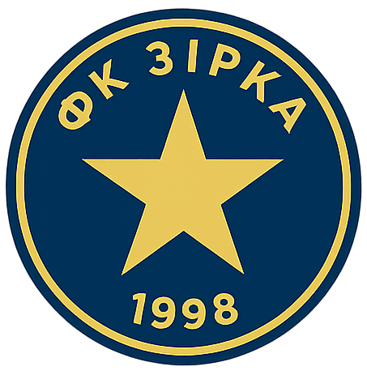

ФК Зірка
Коротка інформація про команду: Футбольний клуб "Зірка" - це професійна команда, заснована 1998 року. За роки свого існування клуб став одним із найсильніших у країні, регулярно беручи участь у національних та міжнародних турнірах.
Команда славиться своєю атакуючою грою, згуртованим колективом та яскравими перемогами. Головна мета клубу – розвивати футбол, надихати вболівальників та завойовувати нові трофеї.